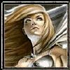

Récits Légendes de Kirin Tor Personnages Célébrités Guildes
Outils Calendrier Calendrier Illustré Mod d'interface
Informations Historiens FAQ Liens Crédits
Les légendes de Kirin Tor
Jüne
Mail : ==> Afficher les personnages de Jüne
Jüne
 Age : 18
Age : 18
Sexe : Femme
Race : Humain
Faction : Alliance
Formation : Guerrier
Description :
"Debout faignasse !"
*Jüne failli tomber du tonneau sur lequel elle s'était assoupie*
"Oh ! Morty comme c'est agréable de se faire reveiller par ta douce voix !" -Bien evidemment Morty avait la voix d'un quadragénaire ayant eu des années d'excès de tabac et autres alcools.-
"Tais-toi bougresse ! Tu étais encore en train d'pioncer ! Si tu crois que l'amiral a que ça à faire d'entretenir ta pauvre carcasse, tu te plantes ma jolie !"
*Jüne arborait maintenant un visage plus crispé, elle savait très bien ce qu'elle devait à l'amiral et n'avait aucune envie de le déçevoir*
"Non mais... mais Morty je .. je dormais pas .. je .. j'était en train de .. enfin.."
"Oui, c'est celà ! Tu m'prend pour un marin d'eau douce ? Je sais très bien que tu pionçais ! Allez active toi, le Baron a demandé a te voir, j'espère bien qu'il te fera passer le goût des siestes..."
*Jüne savait très bien que le vieux Morty ne pensait pas un mot de ce qu'il disait, il se forçait toujours d'être dur avec elle, mais au fond il était vraiment attaché à elle*
*June se mit en chemin et commenca a se poser des questions*
Plus d'infos sur Jüne >>>